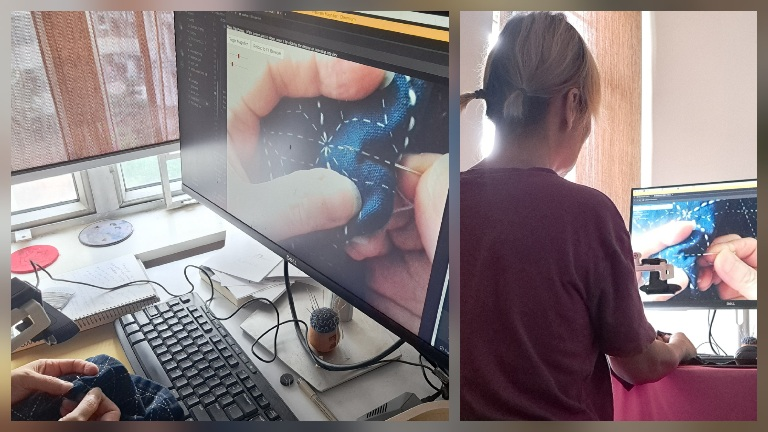

🖥️ This magnifier is NOT a phone app. It is best used on a desktop PC with a webcam.
📱 This is a tool for reading books, sewing and observing object details. Mobile device users are welcome to explore it too, though the camera might default to selfie view or behave differently.
🔍 Future versions will let you use it offline. You can see this now because you have internet and a browser.